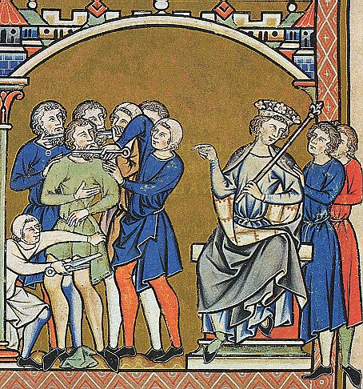

2 Samuel 10 — La Traducción Mister

2 Samuel 10:4. Hanún toma a los siervos de David, les rapa la mitad de la barba y les corta los vestidos por la mitad, hasta las nalgas. El pintor muestra las tijeras en la barba y en la túnica y pone al rey junto a la escena; el hebreo no dice nada de un rey que mire, y tiene las barbas por la mitad y los vestidos cortados hasta las nalgas, donde la imagen muestra la barba siendo cortada.

Notas del traductor — versículo por versículo
Hanún y Nahás. «Y sucedió después de esto que murió el rey de los hijos de Amón, y Hanún su hijo reinó en su lugar»: el rey no se nombra hasta el versículo siguiente, donde es Nahás. Un Nahás «el amonita» subió contra Jabes de Galaad y ofreció cortar un pacto con la condición de cada ojo derecho (1 Samuel 11:1–2, ya en estas páginas), y Samuel recuerda a Israel que «Nahás, rey de los hijos de Amón, venía contra ustedes» cuando pidieron un rey (1 Samuel 12:12, ya en estas páginas). El hebreo da a este hombre el mismo título pero no dice que sea el mismo, ni cuánto tiempo llevaba reinando. Hanún se escribe con las letras de channun, «clemente», la palabra de «misericordioso y clemente» (Éxodo 34:6, ya en estas páginas), y Nahás con las letras de nachash, «serpiente»; los versículos que siguen no dan a ninguno de los dos nombres ocasión de usarse. La RV 1909 y la RV60 tienen «Hanún»; la NVI «Janún» y «Najás»; la TNM 1987 «Hanún» y «Nahás»; la Douay inglesa «Hanon» y, en el versículo siguiente, «the son of Daas». El griego tiene Annōn y Naas.
Hacer bondad con. «Haré bondad con Hanún hijo de Nahás, como su padre hizo bondad conmigo»: este es el verbo del capítulo anterior, donde David preguntó si queda alguien de la casa de Saúl «para que yo haga bondad con él por amor a Jonatán» (2 Samuel 9:1, ya en estas páginas), y la bondad es de nuevo por amor a un padre. «Hacer bondad con» (asah chesed im) está en cuatro versículos. Son Génesis 24:12 (ya en estas páginas), 2 Samuel 3:8, este versículo y 1 Crónicas 19:2. Abner lo usó de su propia lealtad a la casa de Saúl, y el siervo de Abraham lo pidió a Dios. Lo que Nahás había hecho por David no se cuenta en ningún lugar de la Biblia hebrea. La RV60 tiene «Yo haré misericordia con Hanún hijo de Nahas, como su padre la hizo conmigo»; la RV 1909 «Yo haré misericordia con Hanún hijo de Naas, como su padre la hizo conmigo»; la NVI «Debo ser leal con Janún, hijo de Najás, tal como su padre lo fue conmigo»; la TNM 1987 «tal como su padre ejerció bondad amorosa para conmigo»; la TLB inglesa «because his father, Nahash, was always so loyal and kind to me», que da a David una larga relación que el hebreo no menciona. El griego tiene eleos para las dos bondades, la palabra que usó en 2 Samuel 9:1.
Para consolarlo. «Y envió David a consolarlo por mano de sus siervos acerca de su padre»: nacham es el verbo del pésame, y los siervos que van son los «siervos» del versículo, la palabra que los príncipes amonitas volverán contra ellos. La RV60 tiene «para consolarlo por su padre»; la NVI «darle el pésame por la muerte de su padre»; la TNM 1987 «a consolarlo en cuanto a su padre»; la RV 1909 «á consolarlo por su padre».
Espías. «¿Honra David a tu padre a tus ojos, que te ha enviado consoladores? ¿No es para explorar la ciudad, y espiarla, y volcarla, que David ha enviado sus siervos a ti?»: «a tus ojos» es el hebreo, una pregunta sobre si Hanún lo ve como honra. La NVI tiene «porque quiere honrar a su padre»; la TNM 1987 «¿Está David honrando a tu padre a tus ojos al haberte enviado consoladores?»; la RV60 «¿Te parece que por honrar David a tu padre te ha enviado consoladores?»; la RV 1909 «¿Te parece que por honrar David á tu padre te ha enviado consoladores?» Para la segunda pregunta la RV60 tiene «para reconocer e inspeccionar la ciudad, para destruirla»; la NVI «a explorar y espiar la ciudad para luego destruirla»; la TNM 1987 «a fin de explorar la ciudad y para espiarla y para derribarla»; la RV 1909 «por reconocer é inspeccionar la ciudad, para destruirla». El verbo del último es hafakh, «volcar». El griego pregunta si David «glorifica» (doxazein) al padre, y tiene ereunēsōsin, «investigar», y kataskopēsōsin, «espiar».
Media barba. «Y Hanún tomó a los siervos de David, y les rapó la mitad de la barba, y les cortó los vestidos por la mitad, hasta las nalgas; y los despidió»: la afrenta está en las mitades, un rostro medio afeitado y un vestido medio cortado, de modo que los hombres no pueden volver como vinieron ni ser tomados por otra cosa que lo que se les hizo. El profeta usará también la barba como marca de vergüenza, cuando el Señor «rapará con la navaja alquilada al otro lado del Río —con el rey de Asiria— la cabeza y el pelo de los pies; y también se llevará la barba» (Isaías 7:20, ya en estas páginas), y mostrará cautivos «con las nalgas descubiertas, para vergüenza de Egipto» (Isaías 20:4). La RV60 tiene «les rapó la mitad de la barba, les cortó los vestidos por la mitad hasta las nalgas»; la RV 1909 «rapóles la mitad de la barba, y cortóles los vestidos por la mitad hasta las nalgas»; la NVI «dejándolos desnudos de la cintura hacia abajo»; la TNM 1987 «les afeitó la mitad de la barba y les cortó sus prendas de vestir por la mitad, hasta las nalgas»; la TLB inglesa «sent them home half naked». El griego tiene ischia, «caderas», donde el hebreo tiene las nalgas.
Muy humillados. «Porque los hombres estaban muy humillados»: niklamim, del verbo de la vergüenza y la deshonra. «Humillados» (niklamim) está en tres versículos. Son este, 1 Crónicas 19:5 y 2 Samuel 19:4, donde el pueblo entra a escondidas en la ciudad «como se escabullen los avergonzados cuando huyen en la batalla». La RV60 tiene «porque ellos estaban en extremo avergonzados»; la RV 1909 «porque ellos estaban en extremo avergonzados»; la NVI «se sentían muy avergonzados»; la TNM 1987 «habían llegado a sentirse muy humillados». David «envió a su encuentro»: el rey sale a ellos antes de que lleguen a la corte. El griego tiene ētimasmenoi sphodra, «deshonrados en extremo».
Quédense en Jericó. «Quédense en Jericó hasta que les crezca la barba, y entonces vuelvan»: el verbo hebreo es tsamach, «brotar», como la hierba, y el griego conserva esa imagen, anateilai, «salir». Jericó está en la orilla occidental del Jordán, frente a Amón, «la ciudad de las palmeras» (Deuteronomio 34:3, ya en estas páginas); en los días de los jueces Eglón de Moab reunió «a los hijos de Amón y de Amalec» y «tomaron la ciudad de las palmeras» (Jueces 3:13, ya en estas páginas). La RV60 tiene «Quedaos en Jericó hasta que os vuelva a nacer la barba, y entonces volved»; la NVI «Quédense en Jericó y no regresen hasta que les crezca la barba»; la TNM 1987 «Moren en Jericó hasta que les crezca abundantemente la barba».
Hediondos para David. «Y vieron los hijos de Amón que se habían hecho un hedor para David»: el verbo de hacerse un hedor (ba’ash) para alguien está en seis versículos. Son el «haciéndome un hedor a los habitantes de la tierra» de Jacob (Génesis 34:30), el «nos han hecho odiosos ante los ojos del faraón» de los capataces (Éxodo 5:21), Israel que «se ha hecho un hedor para los filisteos» (1 Samuel 13:4), el «de cierto se ha hecho un hedor entre su pueblo» de Aquis (1 Samuel 27:12, todos ya en estas páginas), este versículo, y la palabra de Ahitofel a Absalón (2 Samuel 16:21). La RV60 tiene «se habían hecho odiosos a David»; la RV 1909 «se habían hecho odiosos á David»; la NVI «habían ofendido a David»; la TNM 1987 «se habían hecho hediondos a David». El griego le da la vuelta: katēschynthēsan ho laos Dauid, «el pueblo de David fue avergonzado», como si los amonitas solo vieran lo que habían hecho a los emisarios.
Contrataron a Aram. «Y los hijos de Amón enviaron y contrataron a Aram de Bet-rehob y a Aram de Soba, veinte mil de a pie, y al rey de Maaca, mil hombres, y a Is-tob, doce mil hombres»: «Bet-rehob» está en dos versículos. Son este y Jueces 18:28 (ya en estas páginas), donde es el valle en que estaba Lais. El hebreo tiene ish tov, «hombre de Tob», como nombre; Jueces 11:3 y 5 (ya en estas páginas) tienen la tierra de Tob, donde vivía Jefté cuando los ancianos de Galaad fueron a buscarlo para pelear contra Amón, de modo que Amón contrata ahora en el lugar que dio a su enemigo. Soba es el reino de Hadad-ezer (2 Samuel 8:3, ya en estas páginas). La RV60 tiene «y de Is-tob doce mil hombres»; la RV 1909 «y de Is-tob doce mil hombres»; la NVI «y de Tob, doce mil hombres»; la TNM 1987 «y a Istob, doce mil hombres»; la TLB inglesa «ten thousand from the land of Tob». Crónicas lo cuenta de otro modo: «mil talentos de plata» para contratar «carros y jinetes» de Aram-naharaim, Aram-maaca y Soba, y «treinta y dos mil carros» (1 Crónicas 19:6–7). El griego tiene «Siria de Bet-rob» sin Soba.
A la puerta y en el campo. «Y David oyó, y envió a Joab y a todo el ejército, los valientes. Y salieron los hijos de Amón y se pusieron en orden de batalla a la entrada de la puerta; y Aram … estaban aparte en el campo»: los amonitas se plantan a la puerta de su propia ciudad y Aram un poco más lejos, a campo abierto, levadam, «por sí solos». La RV60 tiene «con todo el ejército de los valientes»; la NVI «con todos los soldados del ejército»; la TNM 1987 «a todo el ejército [y] los hombres poderosos». Para la línea de batalla la RV60 tiene «se pusieron en orden de batalla a la entrada de la puerta»; la RV 1909 «ordenaron sus escuadrones á la entrada de la puerta»; la NVI «se alistaron para la batalla»; la TNM 1987 «disponerse en orden de batalla a la entrada de la puerta». Y para «aparte» la RV60 tiene «estaban aparte en el campo»; la NVI «se quedaron aparte, en campo abierto».
Delante y detrás. «Y vio Joab que el frente de la batalla estaba contra él por delante y por detrás; y escogió de entre todos los escogidos de Israel, y los dispuso al encuentro de Aram. Y el resto del pueblo lo entregó en mano de Abisai su hermano»: el hebreo escrito tiene «en Israel» (beyisrael), que la puntuación lee «Israel». La RV60 tiene «entresacó de todos los escogidos de Israel»; la RV 1909 «entresacó de todos los escogidos de Israel»; la NVI «escogió a las mejores tropas israelitas»; la TNM 1987 «escogió algunos de todos los hombres selectos de Israel». Para el frente la RV60 tiene «que se le presentaba la batalla de frente y a la retaguardia», y la TNM 1987 «las cargas de la batalla habían llegado a estar contra él desde el frente y desde atrás». El griego tiene neaniskōn, «jóvenes». Joab y Abisai son hermanos e hijos de Sarvia (2 Samuel 2:18, ya en estas páginas), y los dos que mataron a Abner (2 Samuel 3:30, ya en estas páginas) se cubren aquí el uno al otro en una sola batalla.
Será salvación para mí. «Si Aram es más fuerte que yo, entonces será salvación para mí; y si los hijos de Amón son más fuertes que tú, entonces iré y te salvaré»: el verbo de la primera mitad es femenino, «y será», sin «tú», de modo que el hebreo dice que habrá rescate y no quién lo trae; la segunda mitad es «iré a salvarte», lehoshia lakh. La TNM 1987 tiene «tienes que servirme de salvación» y «yo tengo que venir a salvarte»; la NVI «tú vendrás a rescatarme»; la RV60 «Si los sirios pudieren más que yo, tú me ayudarás; y si los hijos de Amón pudieren más que tú, yo te daré ayuda»; la RV 1909 «Si los Siros me fueren superiores, tú me ayudarás». El griego tiene eis sōtērian en la primera mitad, «para salvación», y tou sōsai se, «para salvarte». Yasha es la palabra de «Jehová salvó a David dondequiera que fue» (2 Samuel 8:6, 14, ya en estas páginas); aquí dos hermanos se prometen lo mismo, y en el versículo 19 Aram temerá hacerlo por Amón.
Esfuérzate. «Esfuérzate, y esforcémonos por nuestro pueblo y por las ciudades de nuestro Dios; y Jehová hará lo que es bueno a sus ojos»: «Esfuérzate, y esforcémonos» (chazak venitchazzak) está en dos versículos, este y el versículo de Crónicas que repite el discurso (1 Crónicas 19:13). «Lo que es bueno a sus ojos» está en tres versículos, y los otros dos están también en Crónicas (1 Crónicas 19:13; 21:23). El «Él es Jehová; haga lo que es bueno a sus ojos» de Elí (1 Samuel 3:18, ya en estas páginas) son las mismas palabras, escritas bə‘eynō sin la yod, por lo que una búsqueda no las encuentra. Elí lo dijo de un juicio; Joab lo dice ante una batalla, tras hacer todo lo que pueden hacer los hombres. La TNM 1987 tiene «Sé fuerte, para que nos mostremos animosos a favor de nuestro pueblo» y «él hará lo que es bueno a sus propios ojos»; la RV60 «Esfuérzate, y esforcémonos por nuestro pueblo, y por las ciudades de nuestro Dios» y «haga Jehová lo que bien le pareciere»; la NVI «Luchemos con valor por nuestro pueblo y por las ciudades de nuestro Dios». El griego tiene andrizou, «pórtate como un hombre».
Huyeron de delante de él. «Y se acercó Joab, y el pueblo que estaba con él, a la batalla contra Aram; y huyeron de delante de él»: huye primero Aram y después Amón, y Amón vuelve a entrar en la ciudad; Joab no entra en ella, sino que vuelve a Jerusalén. La RV60 tiene «Se volvió, pues, Joab de luchar contra los hijos de Amón, y vino a Jerusalén»; la NVI «Joab suspendió el ataque contra los amonitas y regresó a Jerusalén»; la TNM 1987 «Joab regresó de los hijos de Ammón y vino a Jerusalén»; la RV 1909 «Y volvió Joab de los hijos de Ammón, y vínose á Jerusalem». La guerra con Amón queda parada a la puerta de la ciudad.
Derrotado delante de Israel. «Y Aram vio que había sido derrotado delante de Israel; y se juntaron»: el verbo es nagaf, «ser herido», aquí de una derrota. La RV60 tiene «viendo que habían sido derrotados por Israel»; la RV 1909 «habían caído delante de Israel»; la NVI «al verse derrotados por Israel»; la TNM 1987 «habían sido derrotados delante de Israel».
Del otro lado del Río. «Y envió Hadad-ezer e hizo salir a Aram, el que estaba al otro lado del Río»: «Del otro lado del Río» está en cuatro versículos. Son el «tomé a su padre Abraham del otro lado del río» y los «dioses que sirvieron sus padres al otro lado del río» de Josué (Josué 24:3, 15, ya en estas páginas), este versículo, y 1 Crónicas 19:16. El Río es el Éufrates, donde David había herido a Hadad-ezer (2 Samuel 8:3); aquí el mismo rey llama al país de la otra orilla, el país de donde vino Abraham. Amón había «contratado» a Aram en el versículo 6, y la navaja de Isaías 7:20 está también «alquilada al otro lado del Río». La RV60 tiene «hizo salir a los sirios que estaban al otro lado del Éufrates»; la RV 1909 «sacó los Siros que estaban de la otra parte del río»; la NVI «al otro lado del río Éufrates»; la TNM 1987 «sacó a los sirios que estaban en la región del Río». La Douay inglesa escribe el nombre del rey «Adarezer»; el hebreo de aquí tiene Hadad-ezer, como en el capítulo 8.
Helam y Sobac. «Y vinieron a Helam, con Sobac, jefe del ejército de Hadad-ezer, delante de ellos»: las letras del versículo 16 pueden leerse «y vino su ejército» (chelam), donde el versículo 17 tiene un lugar, Chelamah, y las versiones se dividen. La RV60 tiene «los cuales vinieron a Helam, llevando por jefe a Sobac»; la NVI «los cuales fueron a Jelán bajo el mando de Sobac»; la TNM 1987 «entonces llegaron a Helam»; la Douay inglesa «and brought over their army». Crónicas no tiene lugar, «vino sobre ellos» (1 Crónicas 19:17), y llama Sofac al general. El griego tiene Chalamak tras el Río y Ailam como lugar.
Setecientos carros. «Y David reunió a todo Israel y pasó el Jordán … y David mató de Aram a la gente de setecientos carros y a cuarenta mil jinetes; y a Sobac, jefe de su ejército, lo hirió, y murió allí»: en el versículo 7 David envía a Joab; ahora va él mismo, con todo Israel. Crónicas da «la gente de siete mil carros, y cuarenta mil de a pie» (1 Crónicas 19:18). La RV60 tiene «setecientos carros, y cuarenta mil hombres de a caballo»; la RV 1909 «la gente de setecientos carros, y cuarenta mil hombres de á caballo»; la TNM 1987 «setecientos conductores de carros y a cuarenta mil hombres de a caballo»; y la NVI «a cuarenta mil de infantería», la lectura de Crónicas. El griego tiene hippeōn, «jinetes».
Hicieron paz, y temieron salvar. «Y todos los reyes, siervos de Hadad-ezer, vieron que habían sido derrotados delante de Israel, e hicieron paz con Israel y les sirvieron; y Aram temió salvar más a los hijos de Amón»: los propios siervos de Hadad-ezer pasan a ser de Israel, como Aram de Damasco en 8:6. La RV60 tiene «hicieron paz con Israel y le sirvieron»; la NVI «hicieron la paz con los israelitas y se sometieron a ellos»; la TNM 1987 «prontamente hicieron la paz con Israel y se pusieron a servirle»; la RV 1909 «hicieron paz con Israel, y sirviéronle»; la Douay inglesa «eight and fifty thousand men before Israel», un número que el hebreo no tiene. Para la última cláusula la RV60 tiene «los sirios temieron ayudar más a los hijos de Amón»; la NVI «Y nunca más se atrevieron los arameos a ir en auxilio de los amonitas»; la TNM 1987 «tuvieron miedo de seguir tratando de salvar a los hijos de Ammón». El hebreo tiene lehoshia, el verbo del versículo 11, y el griego dice que los reyes «desertaron» a Israel (ēutomolēsan). Amón se queda sin ayuda y con una puerta que defender, y el capítulo termina sin tomarla.
Patrones que vale la pena llevar adelante
Dónde esta traducción mantiene las palabras exactas y distintas: «hacer bondad con», como en 2 Samuel 3:8 y 9:1; «consolar»; «un hedor» para el verbo de Génesis 34:30 y 1 Samuel 13:4; «muy humillados»; «contratar»; «el frente de la batalla»; «los escogidos»; «salvación» y «salvar», la raíz de 2 Samuel 8:6, 14; «Esfuérzate, y esforcémonos»; «lo que es bueno a sus ojos»; «del otro lado del Río»; «Helam»; «derrotado delante de Israel»; «hacer paz».
Ecos pagados. La bondad de David por amor a un padre (2 Samuel 9:1, 3; 3:8); Nahás y Jabes de Galaad (1 Samuel 11:1–2; 12:12); el hedor de Jacob, los capataces, Israel y Aquis (Génesis 34:30; Éxodo 5:21; 1 Samuel 13:4; 27:12); la navaja alquilada al otro lado del Río (Isaías 7:20); la Ciudad de las Palmeras (Jueces 3:13; Deuteronomio 34:3); Bet-rehob y Lais (Jueces 18:28); Jefté en Tob (Jueces 11:3, 5); Hadad-ezer en el Éufrates y «Jehová salvó a David» (2 Samuel 8:3, 6, 14); la muerte de Abner y los hijos de Sarvia (2 Samuel 3:30; 2:18); el «lo que bien le parezca» de Elí (1 Samuel 3:18); «misericordioso y clemente» (Éxodo 34:6); Abraham y «del otro lado del Río» (Josué 24:3, 15).
Ecos sembrados. El propio relato de Crónicas, con treinta y dos mil carros, Sofac y el discurso repetido (1 Crónicas 19:1–19); el hedor otra vez, dicho por Ahitofel a Absalón (2 Samuel 16:21); Sobi hijo de Nahás, vecino de Maquir, en Mahanaim (2 Samuel 17:27); «humillados» en la vuelta del pueblo (2 Samuel 19:4); las nalgas descubiertas de Isaías 20:4; y el sitio de Rabá que retoma la guerra (2 Samuel 11:1; 12:26–31). Ninguno de estos está todavía en estas páginas.
Siguiente en este libro: 2 Samuel 11 — a la vuelta del año David envía a Joab y a todo Israel contra Amón y se queda en Jerusalén; desde su azotea ve a una mujer que se lava, y el capítulo gira en torno a Betsabé, su marido Urías y una carta llevada por la propia mano de Urías.